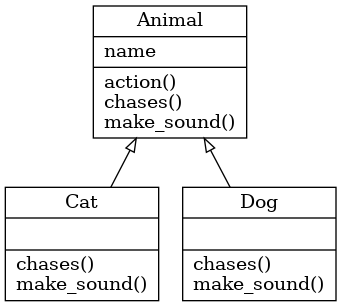

Classes
Contents
Classes#
layout: false
Variables and Functions#
DATA: Variables
str1 = "Hello World!"
str2 = "Python Programming"
lst = ['physics', 'chemistry', 1997, 2000]
Actions: Functions
def printinfo(name, age):
print("Name" , name)
print("Age", age)
Objects and Classes#
Procedure Oriented Programming#
functions and variables used to make program
functions operate on data
data passed between functions
suitable for small/medium programs
Object Oriented Programming#
objects used to make program
functions and data a unit
an object has data attributes and methods
methods are functions that operate on its data
enables reuse of code
suitable for large programs
Note
Everything in Python is an object, and almost everything has attributes (data) and methods (functions for manipulating data)
Objects and Classes#
Class - blueprint for creation of an object#
 a class
a class
 class instances
class instances
Class definition in Python#
>>> class Person:
... def __init__(self, first, last):
... self.first = first
... self.last = last
... def __str__(self):
... return f"Person: {self.first} {self.last}"
>>> p = Person('John', 'Smith')
>>> print(p)
Person: John Smith
data attributes:
first,lastmethods
__init__(initializer),__str__(get string representation)
>>> Person.__str__(p)
Person: John Smith
>>> p.__str__()
Person: John Smith
>>> str(p)
Person: John Smith
Special methods#
__init__,__str__are examples of special methodsused internally but not intended for the user of the software
double underscores begin and end the method names - “dunder methods”
Ordinary class methods#
def name_of_method(self, <list of parameters>):
...
About self
In the initializer
__init__it refers to newly created objectIn ordinary class methods it refers to the object for this method is called
Objects and Classes#
Using objects in a program#
creating an instance of an object in a program
p = Person("Adam", "Smith")
accessing instance attributes in a program
p.given_name = 'John'
calling instance methods in a program
p.display_person()
Instance attributes vs Class attributes#
class Person:
number = 0 # class attribute
def __init__(self, given_name, surname):
self.given_name = given_name # instance attribute
self.surname = surname # instance attribute
Person.number += 1
def __str__(self):
return f"Person: {self.given_name} {self.surname}"
class attributes are shared by instances
instance attributes are unique to each instance
Data encapsulation in object oriented programming#
Public attributes can be freely used in side or outside of a class definition
self.name = value #Public attribute
Protected attributes should not be used outside of the class definition unless inside of a subclass definition
self._value = value # Protected attribute
Private atributes are inaccessible and invisible. It’s is neihter possible to read nor write to those attribtes, except inside of the class definition itself
self.__name = value #Private attribute
Special methods and overloading#
constructor
p = ClassName() # after creation calls p.__init__()
official string representation
repr(p) # calls p.__repr__()
informal string representation
str(p) # calls p.__str__()
getting attribute
p.attr # calls p._getattribute__('attr')
setting attribute
p.attr = value # calls p._setattribute__('attr', value)
getting list of attributes
dir(p) # calls x.__dir__()
overloading binary operators
p._add__(self, other) # addition, +
p._sub__(self, other) # subtraction, -
p._mul__(self, other) # multiplication, *
p._truediv__(self, other) # division, /
p._floordiv__(self, other) # floor division, //
Class inheritance#
Making derived class from base class:
class DerivedClassName(BaseClass): #inheriting from one base class
...
class DerivedClassName(BaseClass1, BaseClass2): #inheriting from multiple base classes
...
All methods ar virutal, i.e. overriding of methods is an intrinsic property of Python
Private attributes are not inherited
Relationship between derived ans base classes
issubclass(DerivedClass, BaseClass) #True or False
Relationship between instance and class
isinstance(Object, Class) # True or False
Simple example of parent (base) and child (derived) classes#
>>> class Parent:
... def __init__(self):
... print("Base constructor")
...
... def base_method(self):
... print('Calling base method')
>>> class Child(Parent):
... def __init__(self):
... print("Derived constructor")
...
... def derived_method(self):
... print('Calling derived method')
>>> c = Child()
Derived constructor
>>> c.base_method()
Calling base method
>>> c.derived_method()
Calling derived method
>>>
When to use inheritance?#
to avoid replication of code (same attributes and methods in different classes)
to take advantages of existing Python classes
when similar if statements are repeated throughout code
import moduleName
class DerivedClass(moduleName.BaseClass):
...
# override/add any functions here.
Example employee class#
>>> class Person:
... def __init__(self, given_name, surname):
... self.given_name = given_name
... self.surname = surname
...
... def get_person(self):
... return "Person : " + self.given_name + " " + self.surname
...
>>> class Employee(Person):
... def __init__(self, given_name, surname, salary):
... super().__init__(given_name, surname)
... self.salary = salary
...
... def get_employee(self):
... return self.get_person() + ", salary: " + str(self.salary)
>>> e = Employee('John', 'Doe', 29500)
>>> print(e.get_employee())
Person : John Doe, salary: 29500
Replacing repeated if-statements with inheritance#
>>> def action(animal, name):
...
... print(name, 'is a', animal)
...
... if animal == 'Cat':
... print(name, "says 'Meow'!")
... elif animal == 'Dog':
... print(name, "says 'Bow-wow!'")
... else:
... print("Don't know what", name, "sounds like")
...
...
... if animal == 'Cat':
... print(name, "chases mouse")
... elif animal == 'Dog':
... print(name, "chases cat")
... else:
... print("Don't know what", name, "chases")
Consider adding more animals and more behaviours - this pattern becomes difficult to maintain in larger codes
>>> action('Cat', 'Felix')
Felix is a Cat
Felix says 'Meow'!
Felix chases mouse
>>> class Animal:
... def __init__(self, name):
... self.name = name
...
... def action(self):
... print(self.name, 'is a', self.__class__.__name__)
... self.make_sound()
... self.chase()
...
... def make_sound(self):
... print("Don't know what", self.name, "sounds like")
...
... def chase(self):
... print("Don't know what", self.name, "chases")
>>> animal = Animal('Olav')
>>> animal.action()
Olav is a Animal
Don't know what Olav sounds like
Don't know what Olav chases
>>> class Dog(Animal):
... def make_sound(self):
... print(self.name, "says 'Bow-wow!'")
...
... def chase(self):
... print(self.name, "chases cat")
>>> class Cat(Animal):
... def make_sound(self):
... print(self.name, "says 'Meow'!")
...
... def chase(self):
... print(self.name, "chases mouse")
>>> cat = Cat('Felix')
>>> cat.action()
Felix is a Cat
Felix says 'Meow'!
Felix chases mouse
Class diagrams#
Are often used to illustrate dependencies between classes
each class is represented by a box
each box is divided name, attributes, methods
arrows indicate inheritance relationships
Static methods#
Static methods are ordinary functions, living in the class namespace. They
might as well be defined outside the class, except that they are now called
with a class name prefix. They do not depend on an instance, and do not have a
self parameter.
Static methods are defined with the @staticmethod decorator
>>> class A:
... def instance_method(self):
... print("In instance_method")
...
... @staticmethod
... def static_method():
... print("In static method")
>>> A().instance_method()
In instance_method
>>> A.static_method()
In static method
Class methods#
Class methods are often used as alternative constructors
class Dog:
def __init__(self, breed, name):
self.breed = breed
@classmethod
def snoopy(cls):
return cls('Beagle', 'Snoopy')
dog = Dog.snoopy()
print(dog.breed, dog.name)